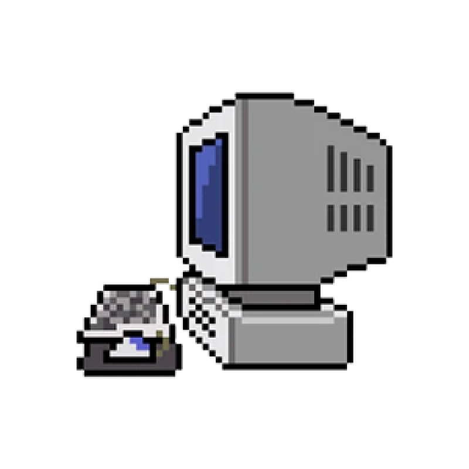
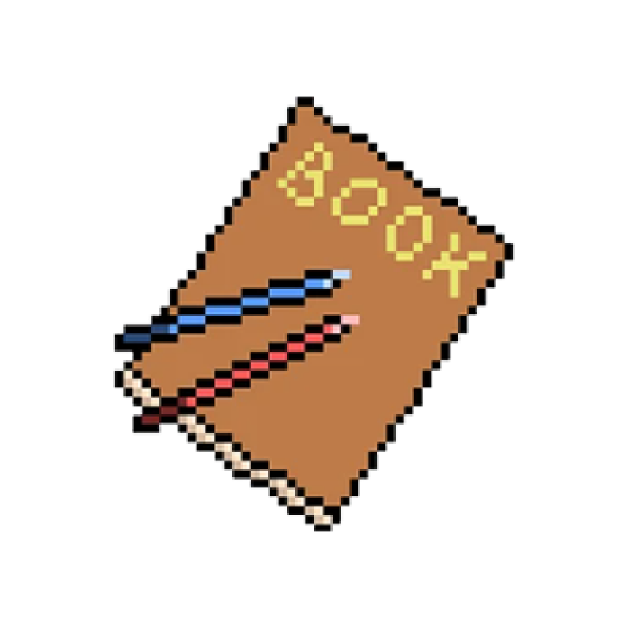
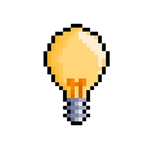
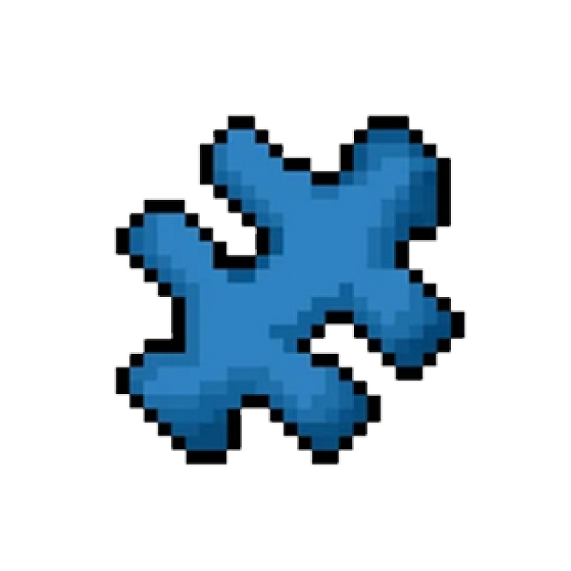
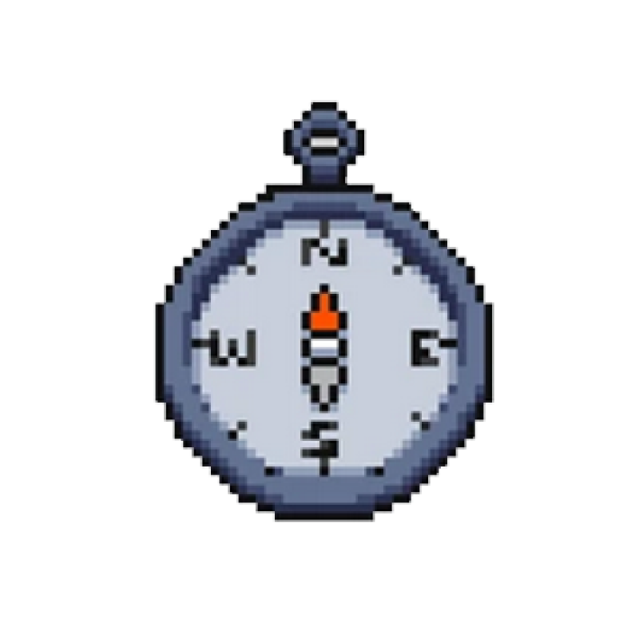
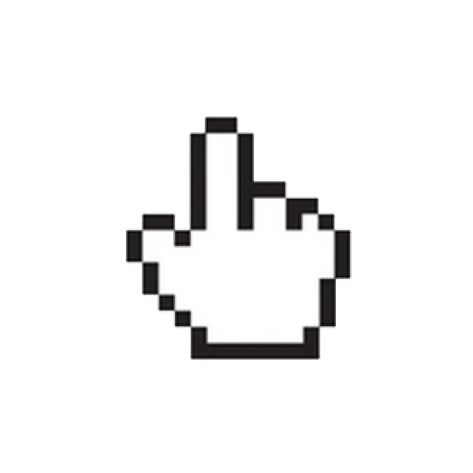
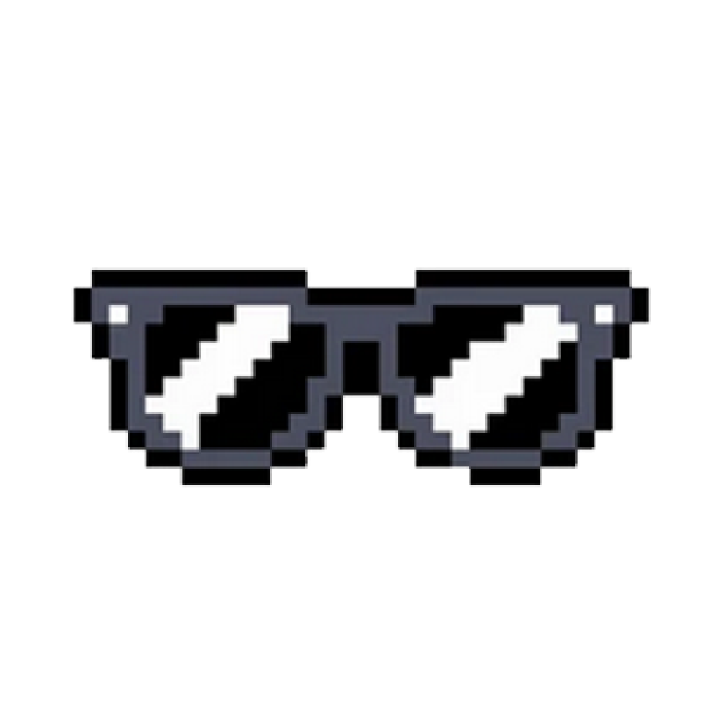
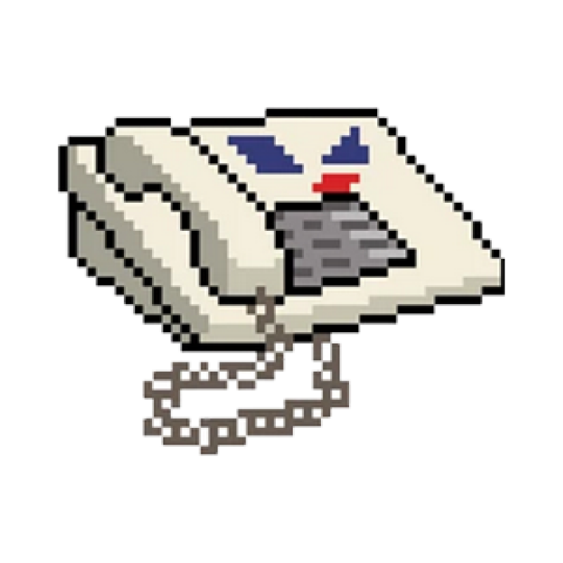

-
I traveled a long way to be here. I left my hometown 6 years ago looking to form a band. I made my first website to promote my music and eventually stuck to making websites. I've always been into creative things, such as music, writing and visual design.
Drawing on post its to decorate my room with got me interested in Graphic Design. I went to the visual arts state school in Romania. Then, I studied Engineering Geology. I am somewhat science-minded, so I wanted something to do with science and nature. I graduated and never worked a day as a geologist, but in the years that followed I got back into drawing, making album covers for myself and my friends. Next >>
-

Work.
-
My dream is to become a UI/UX designer and work along people on things that have meaning and purpose. I started noticing around 2018 that people in this field are cool. That made me gravitate towards it. I slowly realized it sits at the perfect intersection of the things I like. I wouldn't mind doing for the rest of my life.
Working in there taught me a lot about teamwork. About moving within a collective. I can’t imagine doing UI/UX without knowing a bit of code. I wouldn’t be able to leave my colleagues struggle with a technical problem while I sit around and watch. I need to understand what's going on so I could contribute to help them at finding solutions. Next >>
-

Study.
-
I got into development by watching YouTube tutorials and got me a Udemy course for Christmas in 2019. Dubbed "the complete web developer's bootcamp", it made for a good introduction to the realm of coding and it took me some 6 months to complete. Shortly after that I made my first website, which was a typesetting of a fragment from "The Peregrine", a Book by J.A. Baker.
I like reading, so my websites focus on typography and borrow from magazine layouts. I'm a big fan of CSS, so I watched everything from Kevin Powell and Jen Simmons. CSS accessibility articles by Sarah L. Fossheim. Books from Richard Rutter and Ethan Marcotte. A book apart series. I've also used Freecodecamp, Codekata, LinkedIn Learning, Front End Mentor, Just In Mind etc. Next >>
-

Vision.
-
I like simple things that work well. I want to make sure that the apps and websites I work on are easy, pleasant and exciting. Someone once told me: when you really understand something, you can explain it to anyone in very few words.
I want to create products which are basic in the best way possible. I think the world of technology needs to return to uncomplicated and human solutions, and seek inspiration in nature.Next >>
-

Design puzzles.
-
Another thing I like is to solve problems. Solving problems is good for practice, and practice is the way to learn everything.
Finding solutions in a team is one of my favourite feelings in the world. It's amazing how much easier it is to see things in a collective, rather than on your own. Next >>
-

The future.
-
I put a lot of value in being thorough. I can notice a lot in a short time and understand complex mechanisms without much effort.
Adopting minimalism has helped me to actually finish projects, because of my tendency to get lost in detail. I'm also forming my eye. Learning back-end technologies helps a lot, because it makes me more realistic. I want to learn more languages and frameworks. I get a lot of ideas every day. I would like to work for a learning platform, contribute to education in some way, or work in UX and Accessibility to make the Web a better place. Next >>
-

Purpose.
-
Growing up in Romania in the early 00s, I did not have access to a lot of things technology. Spending days and nights in the internet cafe, I self taught myself the best I could. I created my first website at 12 years old and got into Design around the same age, creating banners for a local Warcraft server in Photoshop.
No one should ever be left out of anything - wheter it’s a group, a community or a web app. Building a web that is accessible for everyone is like building roads and railways that connect people, it is more valuable than anything else you could do. Next >>
-

Passing afternoons.
-
I like to listen to music and draw. I enjoy writing and video games. I like 90s-00s and vintage aesthetics. I also like cycling, working out and spending time outside. I think my generation has this mixed media quality - in that we transcend different things we're into. We draw parallels and gain insights from all sort of unlikely places.
Music, for instance, is based on conversation. Folk songs, horns and percussion bought people the news way before writing. The energy exchange between performers and audience is nothing but pure communication. Combine that essence with Graphics and you get Print. Add Computer Science to that and you get Web Design. It's weird. Next >>
-

Can't do this alone.
-
By now you’re probably thinking about your next cup. Wheter you choose to keep surfing the web or decide to rest your eyes on the scenery outside the window, breathing the fresh cool air and listening to the calm rain.
These words have been echoing to me for a while. They explain best why I want to move into Web Design. Thank you for getting this far into my website. I appreciate you took time. Bye now!